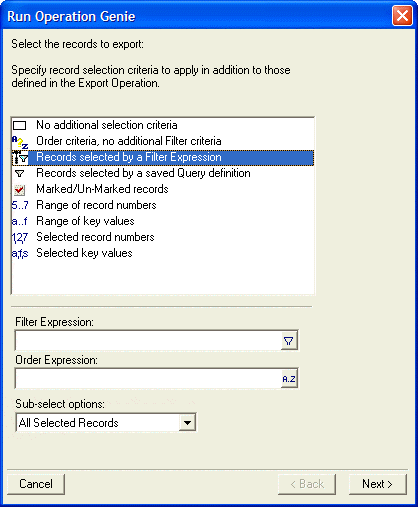
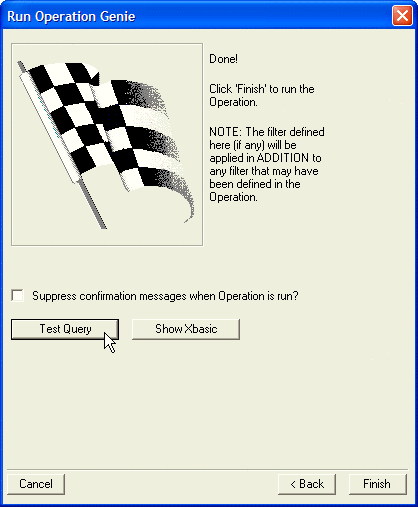

Supplying a Filter and Order at Run Time
When you run an Operation from the Control Panel, or from the Tools menu in a form or a Browse, or by right-clicking on a table or set name in the Control Panel, you can supply a filter and, if appropriate, an order expression. These filter and order criteria are applied in addition to any filter that may have been defined as Part of the Operation.
For example, right-click on a saved Operation, and then select the Run Genie... command. Alpha Five will display the Run Operation Genie :

Optionally specify a character filter expression for selecting records and a character order expression to apply in addition to criteria defined in the Operation.
Click Next.

Optionally click Test Query to display the number of records that will be returned.
Optionally click Show Xbasic to display the Xbasic commands that will be executed.
Click Finish to run the Operation.
See Also